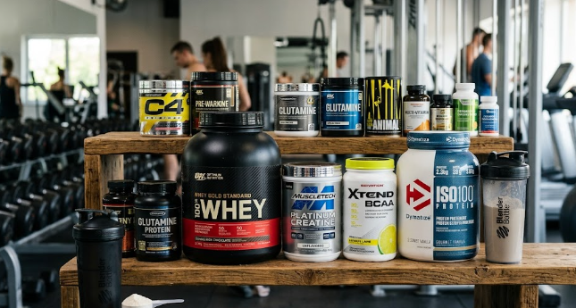

Спортивні добавки — це спеціальні продукти, які використовуються спортсменами та людьми, що активно тренуються.
Вони допомагають покращити результати тренувань, швидше відновлюватися після фізичних навантажень та підтримувати організм у хорошій формі.
Найпопулярнішими спортивними добавками є протеїн, креатин, BCAA, гейнери та вітамінні комплекси. Кожна добавка має своє призначення та особливості використання. Раціон сучасної людини часто не перекриває потребу в мікроелементах при активних тренуваннях, тому добавки стають незамінними помічниками.

Гайд: Як вибрати добавку під свою ціль
Вибір спортивного харчування повністю залежить від результату, якого ви прагнете досягти в тренажерному залі або під час інших видів фізичної активності:
якщо ваша головна мета — це набір якісної м'язової маси, то базою вашого раціону повинен стати сироватковий або комплексний протеїн. Для людей з худорлявою статурою (ектоморфів) також чудово підійде гейнер — висококалорійна білково-вуглеводна суміш.
Для підвищення силових показників та вибухової сили під час важких підходів найкращим вибором є креатин моногідрат. Він затримує воду в м'язових клітинах, роблячи їх більшими, та допомагає швидше відновлювати молекули АТФ під час підходів.
Переваги спортивного харчування
Швидке та ефективне відновлення м'язових волокон після важких тренувань
Значне покращення фізичної сили та витривалості під час робочих підходів
Прискорений набір сухої м'язової маси за умови правильного раціону
Захист м'язів від руйнування (катаболізму) під час тривалих кардіо-навантажень
Зручність у використанні: порцію білка можна отримати в будь-якому місці за хвилину
Популярні спортивні добавки
Протеїн — концентрований білок, який допомагає стабільному росту м'язів
Креатин — паливо для м'язових клітин
Суттєво підвищує вибухову силу
Допомагає витримати тривалі силові навантаження
BCAA — незамінні амінокислоти для швидкого відновлення та захисту від катаболізму
Гейнер — суміш для швидкого набору загальної ваги тіла